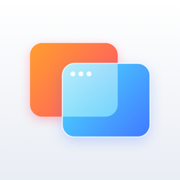
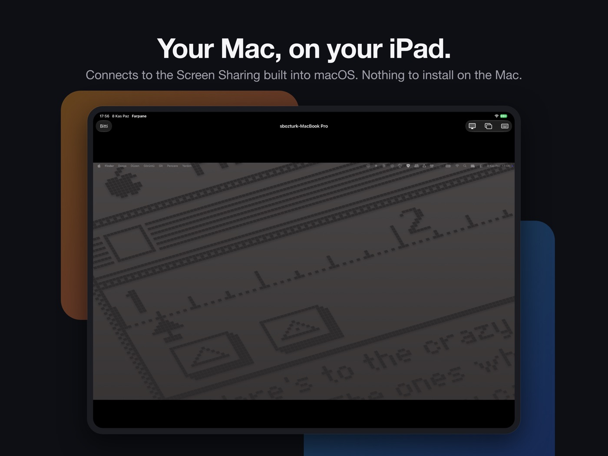
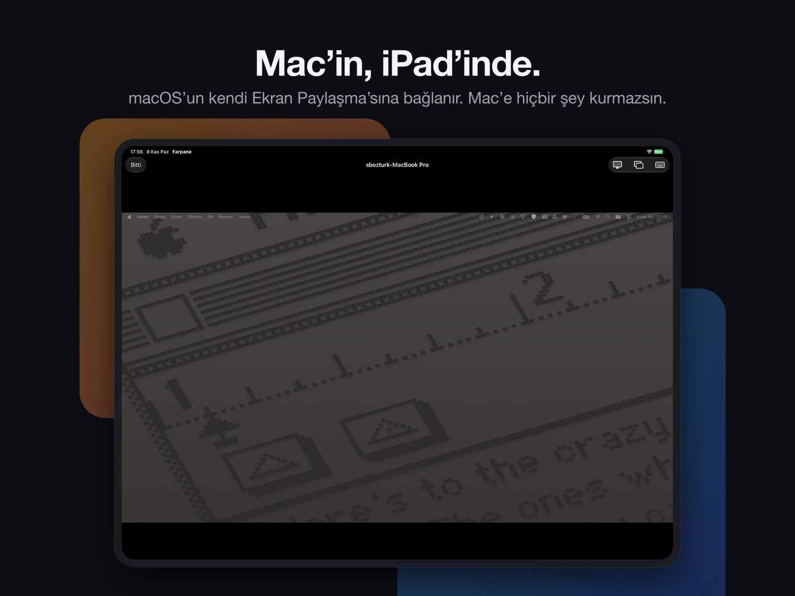

Yaruk
Your Mac on your iPhone and iPad, through the Screen Sharing already built into macOS. Nothing to install on the Mac.
Download on the App Store

Everything included, free
- Finds Macs with Screen Sharing on your network; sign in with the Mac’s own user name and password.
- Tap to click, or turn on trackpad mode and point precisely like on a laptop.
- Hardware keyboard and trackpad, an extra key bar, Turkish and other letters typed correctly.
- Compose text with autocorrect and dictation, or type the clipboard where pasting doesn’t reach.
- Spaces, Mission Control, Spotlight, App Switcher, screenshots and Lock Screen one tap away.
- Pick one of the Mac’s displays on Macs with more than one.
- Reach your Mac from anywhere through an encrypted SSH tunnel, and open an SSH terminal to any server.
- Picture quality follows your connection on its own.
Private by design
No account, no ads, no tracking, no in-app purchases. Connections go straight from your device to your computer, and passwords stay in your Keychain.
Yaruk is Old Turkic for “light”.
Yaruk
Mac’iniz iPhone ve iPad’inizde; macOS’un kendi Ekran Paylaşma özelliğiyle. Mac’e hiçbir şey kurmanız gerekmez.
App Store’dan İndirin

Her şey dahil, ücretsiz
- Ağınızdaki Ekran Paylaşma açık Mac’leri bulur; Mac’in kendi kullanıcı adı ve parolasıyla giriş yapılır.
- Dokunarak tıklayın ya da trackpad modunu açıp dizüstündeki gibi hassasça yönetin.
- Donanım klavyesi ve trackpad, ek tuş çubuğu; Türkçe karakterler doğru yazılır.
- Otomatik düzeltme ve sesle yazmayla metin yazın ya da panoyu yapıştırmanın çalışmadığı yerlere yazdırın.
- Masaüstleri, Görev Denetimi, Spotlight, uygulama değiştirme, ekran görüntüsü ve ekran kilidi tek dokunuşta.
- Birden fazla ekranı olan Mac’lerde istediğiniz ekranı seçin.
- Mac’inize her yerden şifreli SSH tüneliyle ulaşın, her sunucuya SSH terminali açın.
- Görüntü kalitesi bağlantınıza göre kendiliğinden ayarlanır.
Gizlilik öncelikli
Hesap, reklam, izleme ve uygulama içi satın alma yok. Bağlantılar doğrudan aygıtınızdan bilgisayarınıza gider; parolalar Anahtar Zinciri’nde kalır.
Yaruk, Eski Türkçe’de “ışık” demektir.